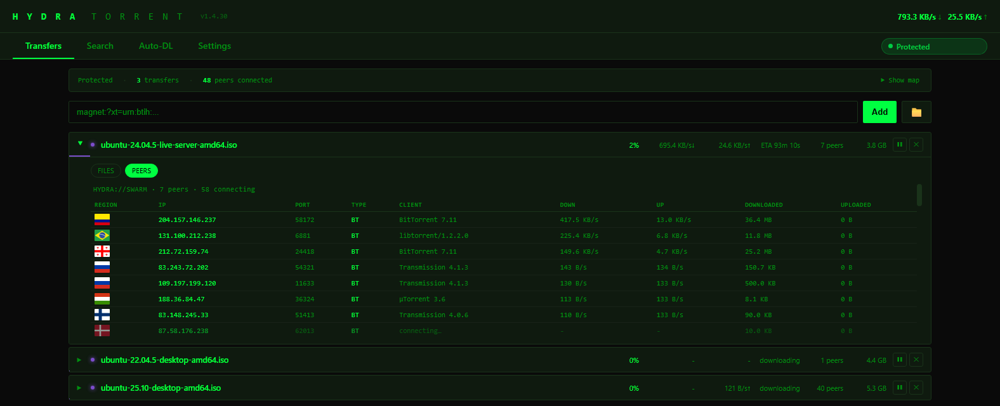
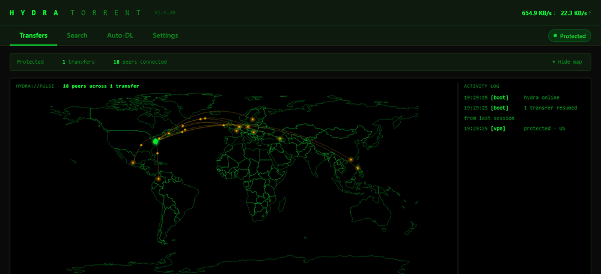
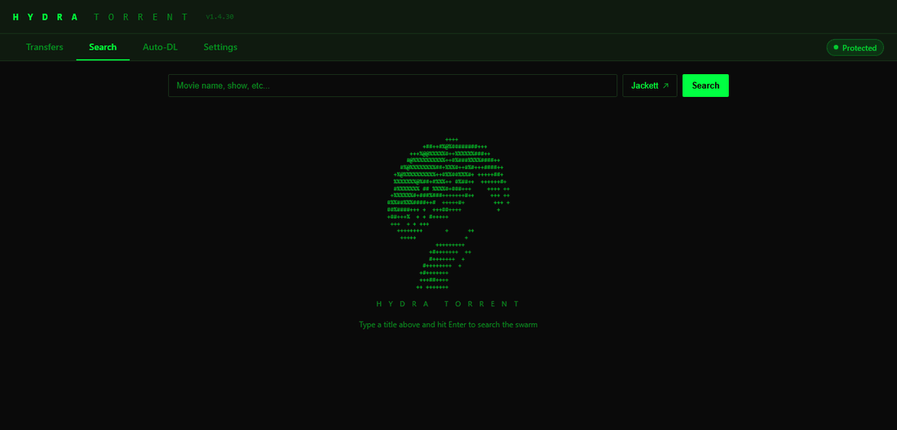
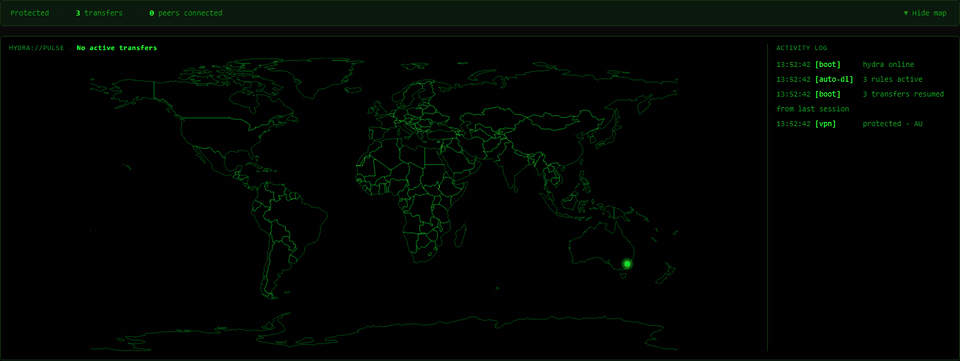

click the head
A BitTorrent client, built for your media server.
Your shows, downloaded and filed while you sleep.
Hydra Torrent is free, open source, and does the boring part for you. It searches through your own Jackett, picks up new episodes with RSS rules, sorts finished downloads into your Plex or Jellyfin library, and tells the server to take a look. You just open Plex.
The Windows exe isn't code-signed yet, so SmartScreen may warn the first time you run it. Choose More info, then Run anyway.
SHA256
Open source · MIT licensed · Windows, Linux and Docker · Source code

Search through your own Jackett, or add an RSS rule for a show and let new episodes come to you.
Hydra downloads on libtorrent. Bind it to your VPN and every transfer stops in about a second if the tunnel drops.
Finished downloads are sorted into your Plex or Jellyfin library, and the server is told to scan. You just open Plex.
Search, download, RSS, filing and the Plex or Jellyfin scan all happen in the same app.
Connect your own Jackett and pick your own indexers. Hydra ships with none, so every source is your choice.
The same BitTorrent library that qBittorrent and Deluge use.
New episodes get grabbed as they appear. Seed ratio limits and auto-remove.
Movies, TV and anime go into the right folders, and Plex and Jellyfin are told to scan.
Windows exe with a tray icon, a Linux service, or Docker. Manage it from any browser on your network.
Choose which files in a torrent to download, and where to save them, before anything starts.
A live map of where your peers are, as it happens (country level).
Hydra binds torrent traffic to your VPN interface and arms the kill switch itself the first time it sees a VPN. If the tunnel drops, every transfer pauses and no sockets stay open on your real connection, then everything resumes when the VPN is back. I measured it on a real drop: with the switch off, Hydra rebound to the real network and kept downloading on my real IP. With it on, nothing ran on a real interface within about a second. Click the head up top to see it.



Yes. Hydra Torrent is open source under the MIT licence. No accounts, no ads, no cookies, no analytics.
The software is. BitTorrent is an ordinary file-sharing protocol, and it is widely used to distribute Linux ISOs, open-source software, game updates and public-domain media. What you download with it is your responsibility. Downloading copyrighted material without permission is illegal in most countries, and Hydra does not change that. Hydra ships with no indexers and no content, so it only finds what you point it at. A VPN kill switch protects your privacy, not your legal position. This is not legal advice.
No. Paste a magnet link or open a .torrent file and it downloads. Plex and Jellyfin are only for auto-filing and library scans, and Jackett is only for the built-in search.
Hydra binds torrent traffic to your VPN interface. If the tunnel drops, transfers pause and nothing stays open on your real connection. They resume when the VPN is back. It is measured on a real drop, and the details are in the repo.
The exe is not code-signed yet, because a signing certificate costs money. Choose More info, then Run anyway. You can check the download against the SHA256 shown above the screenshot.
No. There is no login screen yet, so keep Hydra on your own network or behind a VPN, and do not forward port 8765.
On the GitHub issue tracker.
Download HydraTorrent.exe from the latest release and run it. It installs itself (shortcut, Start Menu, tray icon). SmartScreen will warn because the exe is not code-signed: choose More info, then Run anyway. Hydra opens in its own window; to use a browser instead, open http://localhost:8765/ui.
git clone https://github.com/DelCtrlAlt33/hydra-torrent.git cd hydra-torrent docker compose up -d
git clone https://github.com/DelCtrlAlt33/hydra-torrent.git cd hydra-torrent sudo bash install.sh
On Linux and Docker your browser will show a certificate warning on the first visit. That's expected: the certificate is self-signed.
Hydra works with the Plex, Jellyfin and Jackett you already have. None of them are required to download torrents; paste a magnet link or open a .torrent file and go.